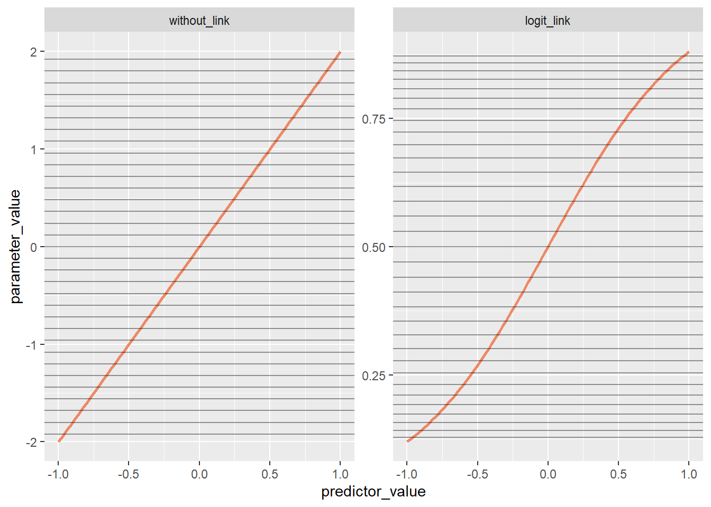
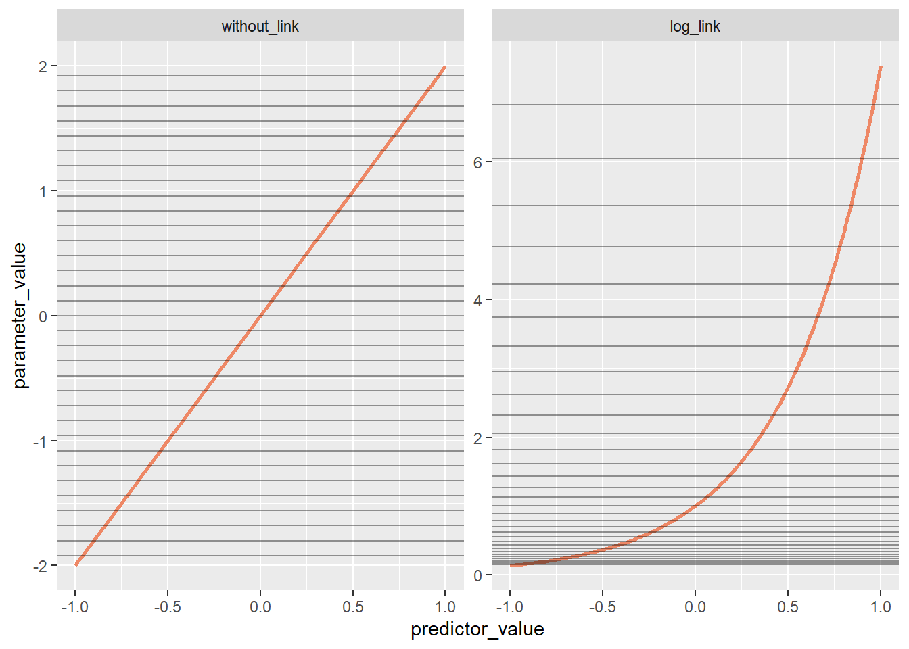

Chapter 10 Big Entropy and the Generalized Linear Model
# Colours by Paul Tol.
# Defined in R by Joachim Goedhart
# Source: doi 10.5281/zenodo.3381072
tol_light <- c('#BBCC33', '#AAAA00', '#77AADD', '#EE8866', '#EEDD88', '#FFAABB', '#99DDFF', '#44BB99', '#DDDDDD')10.1 Chapter Notes
The chapter title is pretty straightforward: this one discusses maximum entropy arguments and introduces GLMs.
Maximum Entropy
The chapter introduces a justification for maximum entropy approaches that appears in Jaynes’ Probability Theory. Jaynes attributes the approach to Graham Wallis. We have \(m\) different possibilities, and we want to assign probabilities \(\{ p_1, \dots, p_m \}\) to them, with the probabilities summing to 1. We want to do this by making use of some information \(I\) that we have.
The following is outlined in an Overthinking box in the chapter. There’s a footnote there to page 352 of Jaynes’ Probability Theory, which is where the detail below (and more!) comes from.
Jaynes describes a thought experiment in which a blindfolded person throws pennies into \(m\) equal boxes, so that any penny has an equal chance of landing in any of the boxes. The person throws some large number \(n >> m\) of pennies and at the end we count up all the pennies in each box, divide by the total number of pennies and take this to be the probability assigned to the boxes by our experiment. For each box \(i = 1,2,\dots,m\)
\[ p_i = \frac{n_i}{n} \]
where \(n_i\) is the observed number of pennies in box \(i\). This is our candidate probability distribution.
The probability of any particular assignment is given by the multinomial distribution:
\[ m^{-n} \frac{n!}{n_1! \dots n_m!}. \]
After the experiment, we check whether the candidate probability distribution is consistent with our information \(I\). If not, we ask the blindfolded person to try again until a distribution is accepted. The most likely probability distibution to result from this game we say is the fairest, subject to our information constraints.
What is the most likely probability distribution to be chosen by this experiment? The answer is whatever one maximises
\[ W = m^{-n} \frac{n!}{n_1! \dots n_m!} \]
subject to the constraints of \(I\). This is equivalent to finding the distribution which maximises \(\frac{1}{n} \log(W)\):
\[ \begin{aligned} \frac{1}{n} \log(W) &= \frac{1}{n} \left( \log(n!) - \log(n_1!) - \dots - \log(n_m!) \right)\\ &= \frac{1}{n} \left( n \log(n) - n + \sqrt{2 \pi n} + \frac{1}{12n} + \mathcal{O}\left(\frac{1}{n^2}\right) \right) && (\text{Stirling approximation for } \log(n!))\\ &\quad - \frac{1}{n} \left( n_1 \log(n_1) - n_1 + \sqrt{2 \pi n_1} + \frac{1}{12n_1} + \mathcal{O}\left(\frac{1}{n_1^2}\right) \right) \\ &\vdots \\ &\quad- \frac{1}{n} \left( n_m \log(n_m) - n_m + \sqrt{2 \pi n_m} + \frac{1}{12n_m} + \mathcal{O}\left(\frac{1}{n_m^2}\right) \right) \\ &= \left( \log(n) - 1 + \sqrt{2 \pi \frac{1}{n}} + \mathcal{O}\left(\frac{1}{n^2}\right) \right) \\ &\quad- \left( p_1 \log(np_1) - p_1 + \sqrt{2 \pi \frac{1}{n}p_1} + \frac{1}{12n^2p_1} + \mathcal{O}\left(\frac{1}{n_1^2}\right) \right) \\ &\vdots \\ &\quad- \left( p_m \log(np_m) - p_m + \sqrt{2 \pi \frac{1}{n}p_m} + \frac{1}{12n^2p_m} + \mathcal{O}\left(\frac{1}{n_m^2}\right) \right) \\ &\to -\sum p_i \log(p_i) +\log(n) -\sum p_i \log(n) - 1 + \sum p_i \\ &= -\sum p_i \log(p_i) \end{aligned} \]
with the limit taken as \(n \to \inf\) and \(n_i \to \inf\) so that \(p_i\) remains constant.
We’ve recovered the formula for information entropy introduced in Chapter 7.
The chapter then goes on to introduce proofs that the Gaussian distribution is the maximum entropy distribution given only a finite variance, and that the binomial is the maximum entropy distribution given only some constant expected value and two unordered possible events. First the Gaussian.
Here’s the probability density function of the Gaussian:
\[ p(x) = (2 \pi \sigma^2)^{-1/2} \exp \left( - \frac{(x- \mu)^2}{2 \sigma^2} \right) \] and its entropy:
\[ H(p) = - \int p(x) \log p(x) dx = \frac{1}{2} \log(2 \pi e \sigma^2) \]
We want to consider \(q(x)\), some other probability density function with the same variance \(\sigma^2\). The basic structure of this proof is that we reintroduce KL divergence from Chapter 7
Revisit.
Generalized Linear Models
This part of the chapter extends the notion of a linear model we’ve been working with so far to include non-Gaussian likelihoods. There is an introduction to the exponential family, and then a discussion of two common link functions that we’ll be using over the rest of the book: the logit link and the log link.
So far we have assumed a Gaussian distribution for the outcome of our models like so:
\[ \begin{aligned} y_i &\sim \text{Normal}(\mu_i,\sigma) \\ \mu_i &= \alpha + \beta x_i \end{aligned} \]
but this is not the best choice when our outcome variable is bounded (like a proportion or a probability), or when it is discrete. Otherwise we could have a model that predicts that the Earth is 130% covered in water, or similar. General linear model approaches generalise the linear models we’ve seen so far. We’ll let our outcome variable be, say, binomially distributed and our linear predictor will we some function of, say, the \(p\) parameter of our binomial:
\[ \begin{aligned} y_i &\sim \text{Binomial}(n,p_i) \\ f(p_i) &= \alpha + \beta x_i \end{aligned} \]
The chapter recommends a maximum entropy approach to selecting the probability distribution that you’ll use for the outcome.
The other new item in the model above is the function \(f()\). This is the link function. We need this because the parameter that we’re feeding into our new distribution may not represent the mean value any more, and it also may have constraints that our linear model \(\alpha + \beta x_i\) may not satisfy. For example, we can’t feed a \(p_i\) to our binomial distribution unless it is between zero and 1. The job of the link function is to map the linear space of \(\alpha + \beta x_i\) onto the non-linear space of the parameter we’re using.
The logit link is used for parameters that represent probabilities, and that therefore must be between 0 and 1. Our models will look like this:
\[ \begin{aligned} y_i &\sim \text{Binomial}(n,p_i) \\ \text{logit}(p_i) &= \alpha + \beta x_i \end{aligned} \]
with the logit function representing the log odds like so: \[ \text{logit}(p_i) = \log \frac{p_i}{1 - p_i} \]
So in this model, our parameter \(p_i\) is the inverse-logit transform of the linear model:
\[ p_i = \frac{\exp(\alpha + \beta x_i)}{1 + \exp(\alpha + \beta x_i)}. \]
This function is called the logistic, or in GLM contexts, the inverse logit.
Here’s a plot:
data_logit <- tibble(n=1:101,
predictor_value = seq(from = -1, to = 1, length.out=101),
without_link = 2*predictor_value, # simple linear model
logit_link = exp(2*predictor_value)/(1+exp(2*predictor_value))) %>% # applying the inverse logit function
pivot_longer(c(without_link,logit_link), names_to= "space",values_to = "parameter_value")
ggplot(data=data_logit,aes(x=predictor_value,y=parameter_value))+
geom_path(colour=tol_light[[4]],size=1)+
geom_hline(data = data_logit %>% filter(n%%3==0), # display every third row in the data as a horizontal line
aes(yintercept=parameter_value), alpha=0.4)+
facet_wrap(~fct_rev(space), scales="free")
The linear model \(2x\) ranges over the log odds space (LHS of plot):
\[ \text{logit}(p_i) = \log \frac{p_i}{1-p_i}= 2x_i \]
After applying the inverse logit, we can see that our parameter \(p\) ranges over the probability space \([0,1]\) (RHS of plot). The horizontal lines are there to show the compression that happens as we get closer to either 0 or 1. From the chapter:
This compression does affect interpretation of parameter estimates, because no longer does a unit change in a predictor variable produce a constant change in the mean of the outcome variable. Instead, a unit change in \(x_i\) may produce a larger or smaller change in the probability \(p_i\), depending upon how far from zero the log-odds are… When an event is almost guaranteed to happen, its probability cannot increase very much, no matter how important the predictor may be.
The other link function introduced in this chapter is the log link.
The log link function is for parameters that are only defined over positive real numbers. E.g.
\[ \begin{aligned} y_i &\sim \text{Normal}(\mu,\sigma) \\ \log(\sigma_i) &= \alpha + \beta x_i \end{aligned} \]
By definition, \(\sigma\) cannot be negative, and the log transform keeps this from happening. In the model above, our \(sigma\) is modelled as the exponentiation of the linear model, since our inverse link function is exponentiation.
Here’s a plot similar to the one for the logit:
data_log <- tibble(n=1:101,
predictor_value = seq(from = -1, to = 1, length.out=101),
without_link = 2*predictor_value, # simple linear model
log_link = exp(2*predictor_value)) %>% # applying the inverse log function exp()
pivot_longer(c(without_link,log_link), names_to= "space",values_to = "parameter_value")
ggplot(data=data_log,aes(x=predictor_value,y=parameter_value))+
geom_path(colour=tol_light[[4]],size=1)+
geom_hline(data = data_log %>% filter(n%%3==0), # display every third row in the data as a horizontal line
aes(yintercept=parameter_value), alpha=0.4)+
facet_wrap(~fct_rev(space), scales="free")
We can see potential trouble here - when asking a model to predict outside of the range of the data it was trained on, the log link can create implausible outputs because of the exponential relationship.
The chapter ends with a couple of
10.2 Questions
There are no questions at the end of this chapter.
Further Resources
On the link between Bayesian conditioning and entropy maximisation:
Williams (1980): Bayesian Conditionalisation and the Principle of Minimum Information (http://www.yaroslavvb.com/papers/williams-conditionalization.pdf)
Caticha, A. and Griffin, A. (2007). Updating probabilities. In Mohammad-Djafari, A., editor, Bayesian Inference and Maximum Entropy Methods in Science and Engineering, volume 872 ofAIP Conf. Proc.
Griffin (2008): Maximum Entropy: The Universal Method for Inference (https://arxiv.org/ftp/arxiv/papers/0901/0901.2987.pdf)
Conrad’s paper deriving various maximum entropy distributions. https://kconrad.math.uconn.edu/blurbs/analysis/entropypost.pdf Work through this and fill out the Gaussian and Binomial arguments above.